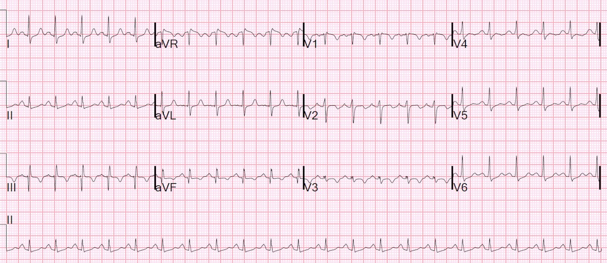

13/09/2018 — Hôn mê sau quá liều opiate, kèm nhịp nhanh và hạ huyết áp
Bản dịch tiếng Việt của bài "Comatose after opiate overdose, with tachycardia and hypotension" – Dr. Smith’s ECG Blog. Giữ nguyên toàn bộ 3 hình ảnh và 2 video của bản gốc.
Tôi nhận được điện tâm đồ này qua tin nhắn, kèm thông tin: một bệnh nhân nữ khoảng 20 tuổi được phát hiện nằm bất tỉnh, nhiều khả năng do quá liều opiate:


Đây là câu trả lời của tôi: “Trông giống điện tâm đồ của thuyên tắc phổi. Nhưng nếu cô ấy bị thiếu oxy vì nhiều lý do khác nhau, điều đó có thể gây co mạch phổi do thiếu oxy (hypoxic pulmonary vasoconstriction), dẫn đến tăng áp lực động mạch phổi và hình ảnh tăng gánh tim phải (right heart strain) trên điện tâm đồ, bắt chước PE.”
Vì sao tôi nói vậy? Có nhịp nhanh xoang với sóng T đảo ngược ở V1-V3 và ở chuyển đạo III (kèm cả dấu hiệu S1Q3T3, vốn là một dấu hiệu kém đặc hiệu hơn). Đây là một điện tâm đồ kinh điển của tăng gánh tim phải.
Đây là toàn bộ câu chuyện:
Một phụ nữ trẻ không tỉnh dậy vào buổi sáng sau khi được cho là đã dùng ma túy cùng bạn trai. Khi nhân viên cấp cứu ngoài viện đến, cô không đáp ứng, thở ngáp (agonal). Huyết áp ban đầu ở mức 70 mấy. Đã tiêm 2 mg naloxone nhưng mức độ ý thức không cải thiện.
Khi đến viện, cô không đáp ứng. Mạch 137 và huyết áp dao động, tâm thu từ 50-117 và tâm trương từ 32 đến 77. SpO2 khi thở oxy là 100%.
Cô được đặt nội khí quản.
Đã siêu âm tim tại giường (POCUS):
Hình ảnh cho thấy thất phải giãn và thất trái nhỏ, rỗng, tăng động. Đây là hình ảnh điển hình của thuyên tắc phổi. Cũng có ghi nhận tĩnh mạch chủ dưới (IVC) xẹp, cho thấy giảm thể tích tuần hoàn (nếu đây là PE, IVC lẽ ra phải giãn, trừ khi có giảm thể tích tuần hoàn nặng).
Có vẻ như những người đọc chủ yếu chỉ thấy chức năng thất trái (LVF) tốt và tình trạng giảm thể tích tuần hoàn, mà không thấy thất phải lớn, và họ đã truyền dịch tĩnh mạch.
Độ bão hòa oxy là 100% sau khi đặt nội khí quản. Huyết áp tăng lên 140/80 sau truyền dịch. Cô được đưa đi chụp CT sọ não, kết quả âm tính.
Có nhiễm toan lactic, số lượng bạch cầu 18.000 và creatinine 3,5.
Troponin I, xét nghiệm được chỉ định tự động ở các ca nguy kịch, trả về 7,979 ng/mL (rất cao). Điện tâm đồ 12 chuyển đạo ghi lại không thay đổi.
Đã làm siêu âm tim qua thực quản (TEE) tại khoa cấp cứu — điều chúng tôi làm ở hầu hết bệnh nhân sốc đã đặt nội khí quản (và ở mọi bệnh nhân ngừng tim):
Định hướng: đầu dò nằm ngay phía sau nhĩ trái.
Thất trái ở bên phải.
Nhĩ phải ở phía trên bên trái.
Thất phải (RV) ở phía dưới của hình.
Diễn giải: Hình này một lần nữa cho thấy thất trái tăng động và thất phải lớn. Cũng lưu ý nhĩ trái nhỏ.
Siêu âm tĩnh mạch chi dưới tại giường không thấy huyết khối tĩnh mạch sâu (DVT). Kết quả này được xác nhận bằng siêu âm của khoa chẩn đoán hình ảnh. Như vậy, PE vẫn chưa được chẩn đoán xác định.
Vì vậy, mặc dù Cr tăng, vẫn tiến hành chụp CT mạch phổi (CTPA), cho thấy khuyết thuốc ở đoạn xa động mạch phổi chính bên phải, lan vào các động mạch phổi phân thùy của thùy dưới phải và thùy trên phải. Có kèm tăng gánh tim phải. Có thể có một ổ nhồi máu nhỏ liên quan đến thuyên tắc dưới phân thùy ở phần sau thùy dưới phải.
Bệnh nhân được dùng heparin. Cô đã hồi phục.

———————————————————–
Bình luận của KEN GRAUER, MD (12/9/2018):
———————————————————–
Dr. Smith đã đọc rất xuất sắc điện tâm đồ này, ghi từ một phụ nữ khoảng 20 tuổi được phát hiện nằm bất tỉnh do quá liều opiate. Đây là minh họa sâu sắc cho thấy siêu âm tim tại giường (POC) đi kèm có thể hữu ích đến mức nào (!) — cho thấy các dấu hiệu chính của PE cấp trong ca này. Tôi chỉ giới hạn bình luận của mình ở điện tâm đồ.
—————————————
- Dr. Smith ngay lập tức nhận ra một số dấu hiệu trên điện tâm đồ trong ca này gợi ý “PE cấp cho đến khi chứng minh được điều ngược lại!” Ông ghi nhận nhịp nhanh xoang và sóng T đảo ngược đối xứng ở chuyển đạo III và ở các chuyển đạo trước — những dấu hiệu này, khi kết hợp với bối cảnh lâm sàng, gợi ý rõ ràng tăng gánh tim phải cấp.
—————————————
CÂU HỎI:
- Có một số dấu hiệu điện tâm đồ bổ sung phù hợp với chẩn đoán tăng gánh thất phải cấp. Đó là những dấu hiệu nào?
- Về mặt kỹ thuật — Có dấu hiệu S1Q3T3 không? Về mặt lâm sàng — Câu trả lời cho câu hỏi này có quan trọng không?
—————————————
TRẢ LỜI:
- Hình ảnh “tăng gánh” thất phải cấp có thể thấy ở 2 vùng chuyển đạo trên điện tâm đồ. Đó là các chuyển đạo trước (tức là V1, V2, V3) — và các chuyển đạo dưới (chuyển đạo II, III, aVF). Không phải lúc nào cũng thấy ở cả hai vùng chuyển đạo này — nhưng khi có, trong bối cảnh lâm sàng “phù hợp” — khả năng PE cấp tăng lên đáng kể. Dù kém rõ rệt hơn so với sóng T đảo ngược khá sâu mà chúng ta thấy ở đây trong chuyển đạo III — vẫn có ST-T chênh xuống ở cả hai chuyển đạo II và aVF.
- Có hình ảnh IRBBB (blốc nhánh phải không hoàn toàn) — dưới dạng rSr’ ở V1, đi kèm với sóng s tận hẹp ở chuyển đạo I và V6. Cả RBBB hoàn toàn và không hoàn toàn đều là những chỉ điểm tiềm năng của tăng gánh thất phải cấp.
- Dù không đáp ứng định nghĩa IRBBB trên điện tâm đồ — tôi luôn diễn giải hình ảnh rSR’ rõ ở chuyển đạo III (như chúng ta thấy ở đây) là một “tương đương” IRBBB, với ý nghĩa lâm sàng tương tự IRBBB. Vì vậy, trong ca này — tôi đánh giá rSR’ ở chuyển đạo III là bằng chứng hỗ trợ thêm cho tăng gánh thất phải cấp.
- Vậy về mặt kỹ thuật, chúng ta không có hình ảnh S1Q3T3 trên điện tâm đồ này — vì không có sóng Q ở chuyển đạo III. Thay vào đó, có một sóng lệch dương ban đầu (sóng r) nhỏ-nhưng-chắc-chắn-có-mặt ở chuyển đạo này. Dù vậy — có quá nhiều dấu hiệu điện tâm đồ khác chỉ về chẩn đoán tăng gánh thất phải cấp, nên việc không có hình ảnh S1Q3T3 không ảnh hưởng gì đến đánh giá của chúng ta.
- Có gợi ý về RAA (bất thường nhĩ phải — Right Atrial Abnormality) — mặc dù không đáp ứng tiêu chuẩn điện tâm đồ chặt chẽ (tức là biên độ sóng P ở một chuyển đạo dưới ≥2,5 mm). Đó là vì sóng P ở chuyển đạo II có nhọn bất thường (đỉnh nhọn) — và vì chúng ta cũng thấy một sóng P nhọn (dù nhỏ) ở chuyển đạo V2. Hiếm khi thấy một trong hai dấu hiệu này trên một điện tâm đồ bình thường. Tôi xin nhấn mạnh rằng nếu chỉ là các dấu hiệu đơn lẻ — tôi sẽ không kết luận RAA. Nhưng trong bối cảnh mọi thứ khác mà chúng ta thấy trên bản ghi này — lý do hợp lý nhất cho sóng P nhọn-hơn-nhiều-so-với-thường-lệ ở cả hai chuyển đạo II và V2 là RAA ở một bệnh nhân có tăng gánh thất phải cấp.
- Cuối cùng — có ST chênh lên rõ rệt ở chuyển đạo aVR. Chỉ có một số rất hạn chế tình trạng gây ST chênh lên rõ nhất ở chuyển đạo aVR — nhưng rất ít hoặc không có ở các chuyển đạo khác (có lẽ ngoại trừ V1). Một trong những tình trạng này là PE cấp (tức là một biểu hiện khác của tăng gánh thất phải cấp).
SUY NGHĨ CUỐI CÙNG: Chẩn đoán phì đại thất phải (RVH) trên điện tâm đồ thường là một thách thức. Đó là vì không có một dấu hiệu đơn lẻ nào có tính chẩn đoán. Thay vào đó, thường cần kết hợp nhiều dấu hiệu. Chẩn đoán PE cấp trên điện tâm đồ cũng vậy. Không có dấu hiệu đơn lẻ nào có tính chẩn đoán — mà cần một sự kết hợp các dấu hiệu xuất hiện trong “bối cảnh lâm sàng phù hợp” mới gợi ý được chẩn đoán. Xin cảm ơn Dr. Smith về ca bệnh này — một ca minh họa xuất sắc việc áp dụng những nguyên tắc trên.
- LƯU Ý: Với những ai muốn ôn lại các dấu hiệu điện tâm đồ của RVH, và cách dùng thông tin này để nghi ngờ PE cấp — BẤM VÀO ĐÂY).